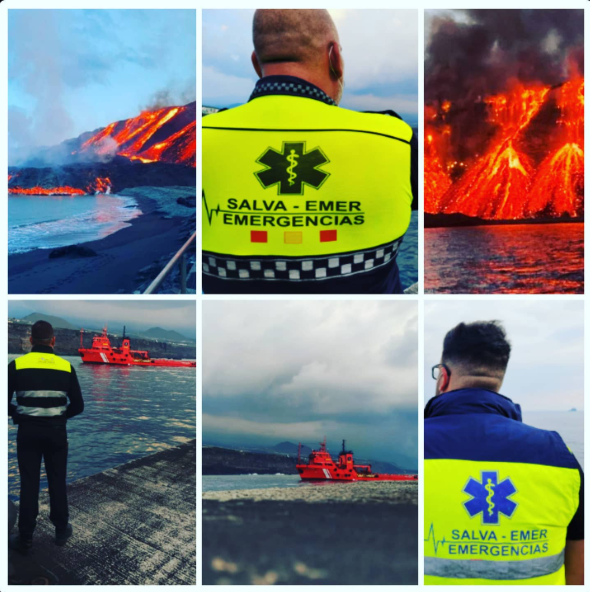
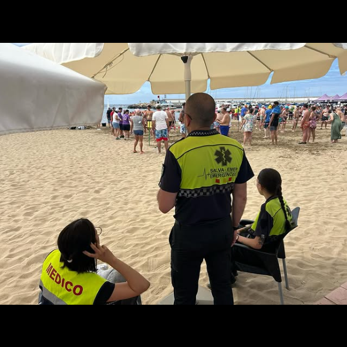

Highly trained team providing support in handling critical situations and daily care.
We have an urgent ambulance service and medical transfers equipped with advanced technology and highly qualified healthcare personnel, ready to respond to any medical emergency quickly and efficiently.
Personalized home medical service, offering support in urgent care and non-urgent medical needs, ensuring prompt and effective attention for dependent individuals.
A specialized telematic assistance service ensuring the protection and support of elderly or vulnerable individuals. The Acuda watch provides monitoring of vital signs, medication reminders, monthly reports, emergency assistance, geolocation, and perimeter monitoring.
Availability of medical units at mass events to respond to any eventuality.

We have a highly trained team and advanced technology for conducting rescues in extreme conditions, ensuring safety and efficiency.
Providing support and guidance to individuals affected by emergencies, managing the psychosocial needs of victims and their families.
Specialized in rescue operations in various emergency situations, minimizing risks and maximizing safety.
A highly trained team equipped to conduct rescues in challenging terrains such as mountains, ravines, and rough areas.
Prepared for large-scale emergencies such as natural disasters, providing rescue, medical care, and initial support.
Includes trained rescue dogs for water emergency searches.
We develop customized security plans for events, managing risks effectively.
Creation of security plans in compliance with Decree 86/2013.
Licensed emergency teams using drones to monitor incidents and prevent risks.
Assisting in traffic management during emergencies and special events.

Specialized training unit for emergencies, rescues, and safety.
- Custom Courses: We develop workshops for businesses, schools, and the public on first aid, CPR, and evacuation plans.
- Simulations and Innovation: Practical training using advanced technology like virtual reality and rescue simulators.
- Certifications: Accredited programs validating competencies.


 ES
ES
 EN
EN
 DE
DE
 FR
FR
 NO
NO
 IS
IS